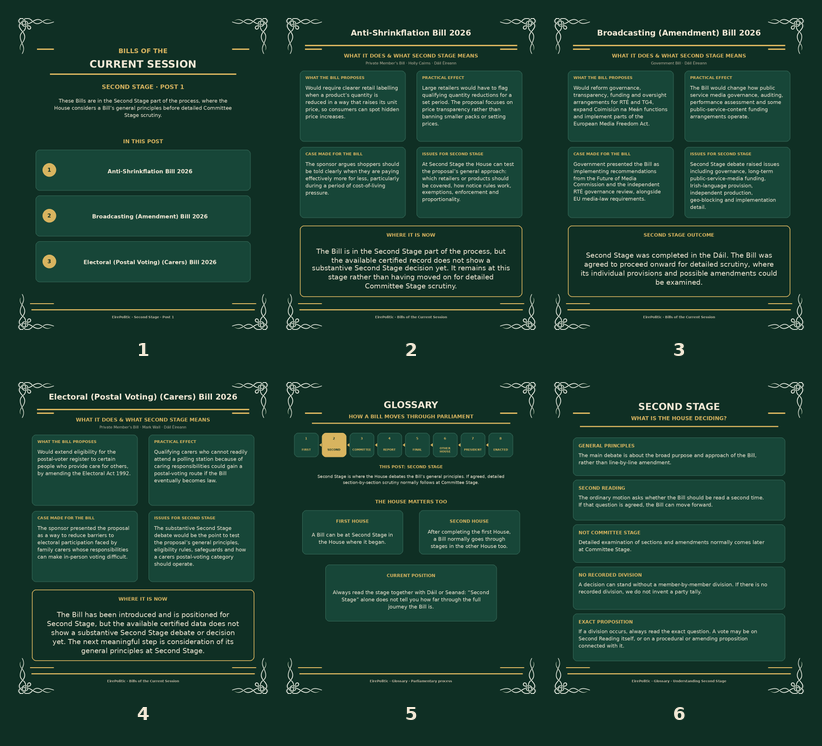
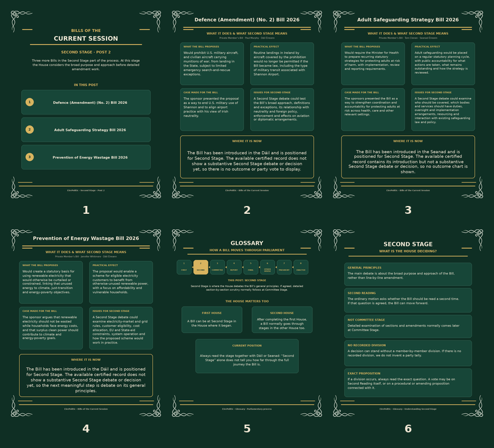

Bill Tracker · Second Stage
Two review carousels using the canonical Bill Tracker corner accents extracted from the approved Enacted factory artifact.
Post 1
Open Post 1 individual-slide review

Post 2
Open Post 2 individual-slide review
